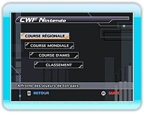
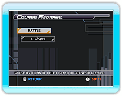
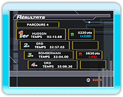
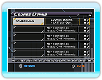
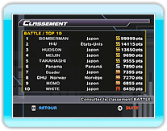

17 |
Mode CWF Nintendo |
 |
|
Sélectionne "CWF Nintendo" depuis le menu principal.
Une fois connecté, l'écran de sélection du mode CWF Nintendo s'affiche. Choisis le mode CWF Nintendo auquel tu veux jouer et appuie sur
● COURSE RÉGIONALE
● COURSE MONDIALE
● COURSE D'AMIS
● CLASSEMENT
Tu as le choix entre deux modes. Choisis le mode auquel tu souhaites participer, puis appuie sur

● BATTLE
● STOÏQUE
Sélectionne un personnage et
● SALON PRIVÉ 
● Rejoindre un ami
Si tu courais avec des amis, tes résultats de course avec chacun de tes amis seront mis à jour.
● Enregistrer un ami
Ta place dans le classement est déterminée par les points de classement en modes BATTLE et STOÏQUE envoyés et reçus, ou les temps de course en mode CONTRE-LA-MONTRE.
Une fois le type de classement à consulter sélectionné, tu vois
Le classement sera automatiquement mis à jour une fois un type de classement sélectionné. *
|
 |
 |
 |